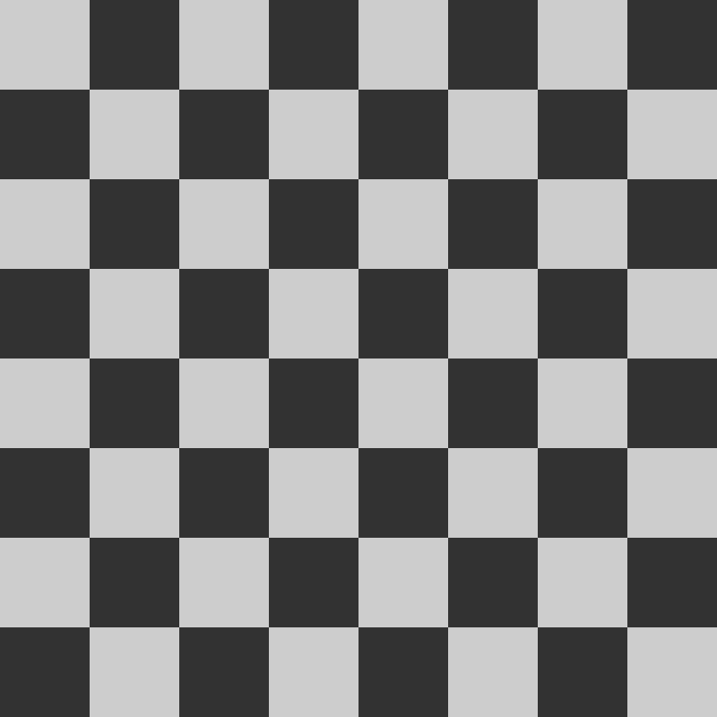
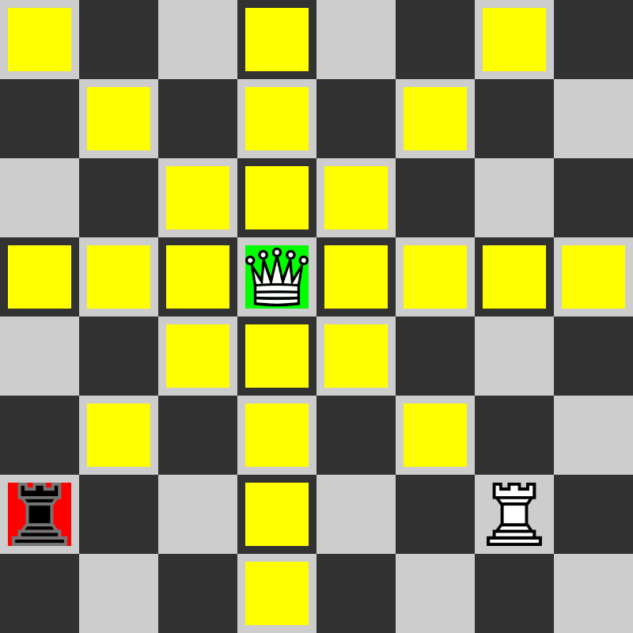
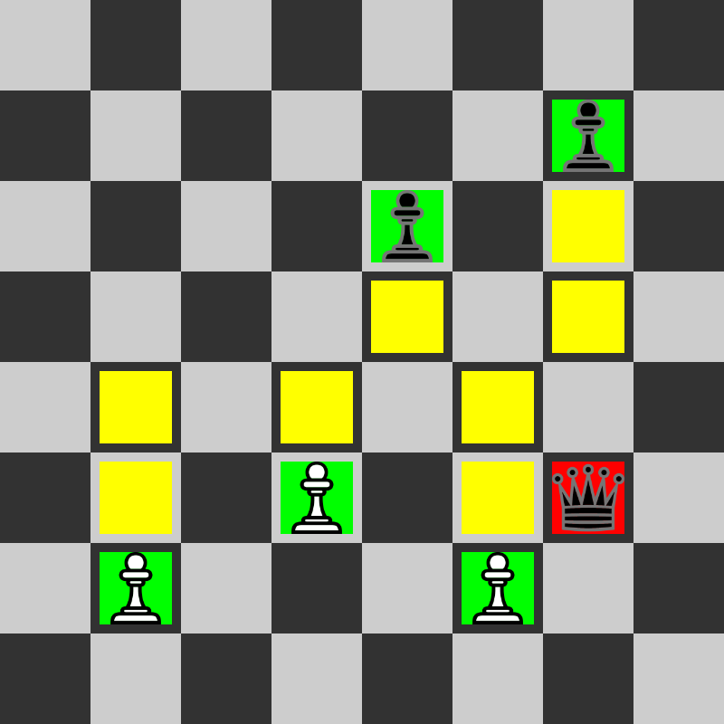
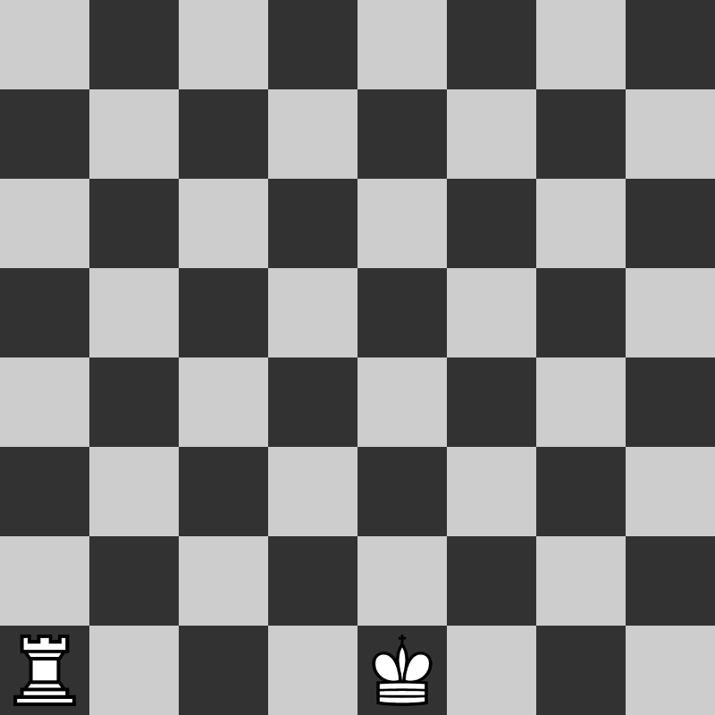
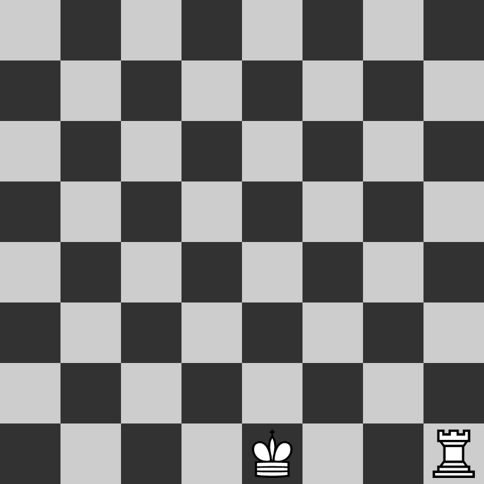

Il tavoliere del gioco degli scacchi, detta "scacchiera", da 64 "caselle" (o "case"), 32 chiare e 32 scure, ed è orientato in modo che in basso a destra vi sia una casella chiara, come mostrato in figura.
La disposizione iniziale dei pezzi è quella riprodotta nell'immagine sottostante. La regina bianca si trova in una casella chiara, la regina nera in una casella scura. Si gioca in due. I giocatori giocano a turno. Ogni giocatore ha una sola mossa per turno. Inizia il bianco.

Ciascun pezzo degli scacchi si muove con precise modalità. Nessun pezzo può andare ad occupare una casa in cui è presente un altro pezzo dello stesso schieramento, può invece muoversi su una casa occupata da una pezzo avversario, effettuando in tal caso una "cattura", cioè eliminando dalla scacchiera il pezzo avversario e prendendo il suo posto.
La torre si muove su una qualunque casella della stessa riga o della stessa colonna in cui si trova, a patto che tra la casella di arrivo e quella di partenza non vi siano pezzi (propri o avversari) e purché la casella di arrivo non sia occupata da un proprio pezzo.

L'alfiere si muove su una qualunque casa delle stesse diagonali in cui si trova, a patto che tra la casella di arrivo e quella di partenza non vi siano pezzi (propri o avversari) e purché la casella di arrivo non sia occupata da un proprio pezzo. L'alfiere non cambia mai il colore delle caselle in cui si muove, per questo motivo si può dire che ciascun giocatore ad inizio partita dispone di un alfiere di campo chiaro e di un alfiere di campo scuro.

La regina combina le mosse dell'alfiere e della torre, potendo muoversi su tutte le caselle della stessa riga, della stessa colonna o delle stesse diagonali, a patto che tra la casella di arrivo e quella di partenza non vi siano pezzi (propri o avversari) e purchè la casella di arrivo non sia occupata da un proprio pezzo.
Il cavallo si muove ad "L", ovvero, si muove o di due caselle in senso orizzontale e una in senso verticale oppure di una casella in senso orizzontale e due in senso verticale; il tutto a patto che la casella di arrivo non sia occupata da un proprio pezzo. Il cavallo può muoversi anche se ci sono altri pezzi in mezzo.

Il pedone è il pezzo più difficile in termini di movimento. Alla sua prima mossa (ovvero quando si trova alla posizione iniziale) il pedone può muoversi di una o due caselle più avanti, a scelta dal giocatore, purché tra la casella di arrivo e la casella di partenza non ci siano pezzi (propri o avversari) e che la casella di arrivo sia libera. Nelle sue mosse successive il pedone può muoversi solo di una casella per volta, a patto che questa sia libera. A differenza degli altri pezzi, il pedone non può tornare indietro. Il pedone è anche l'unico pezzo che cattura in modo differente da come si muove: può catturare un pezzo nemico solo se si trova su una delle due caselle diagonalmente in avanti rispetto alla sua casella di partenza, ma non può né muovere in tali caselle se esse sono libere e né catturare i pezzi che si trovano nelle caselle che ha di fronte.
Il re è il pezzo più importante del gioco. Esso non può mai essere catturato, ma solo "minacciato", in tal caso si dice che il re è sotto scacco. Il re può muoversi in quasiasi casella a lui adiacente, a patto che la casella di arrivo non ci sia un proprio pezzo e che una volta arrivato non sia sotto scacco.

L'arrocco è l'unica mossa che permette al re di moversi di due caselle.
Per procedere all'arrocco bisogna soddisfare le seguenti condizioni:



La cattura al varco è una mossa speciale fatta dal pedone.
Per procedere alla cattura bisogna soddisfare le seguenti condizioni:


Un pedone, quando arriva in fondo alla scacchiera, può essere promosso in un'altro pezzo.
Un pedone può essere promosso in uno dei seguenti pezzi: